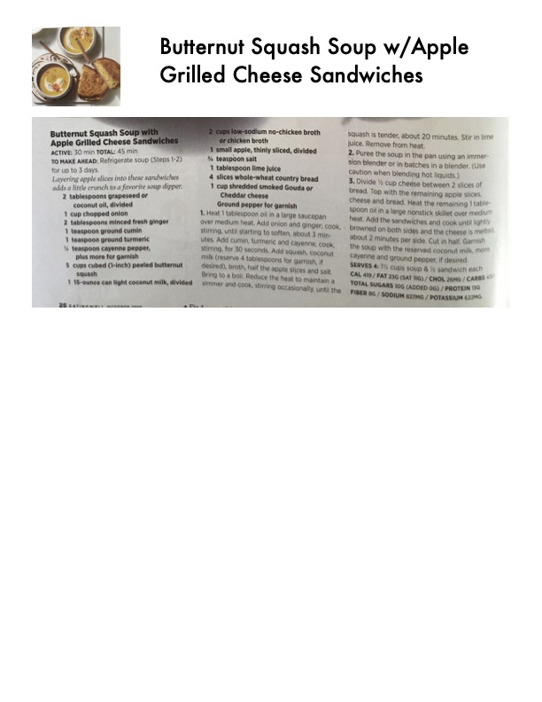

Butternut Squash Soup w/Apple Grilled Cheese Sandwiches

Original cookbook page 48
Layering apple slices into these sandwiches adds another dimension to a favorite grilled cheese and tomato soup combination.
Prep: 30 minutes • Cook: 15 minutes • Total: 45 minutes
Ingredients
- 2 cups low-sodium no-chicken broth or chicken broth
- 1 small apple, thinly sliced, divided
- 1 teaspoon salt
- 1/4 teaspoon white pepper
- 4 slices whole-wheat country bread
- 1 cup shredded smoked Gouda or sharp Cheddar cheese
- Coconut oil, divided
- 1 cup chopped onion
- 2 tablespoons minced fresh ginger
- 1 teaspoons ground cumin
- 1 teaspoon ground turmeric
- 1/8 teaspoon cayenne pepper
- plus more for garnish
- 1 cups cubed (1-inch) peeled butternut squash
- 1/3 cup canned light coconut milk, divided
Instructions
- Heat 1 tablespoon oil in a large saucepan over medium heat. Add onion and ginger; cook, stirring, until starting to soften, about 3 minutes. Add cumin, turmeric and cayenne; cook, stirring, for 30 seconds. Add squash, coconut milk (reserve 2 tablespoons for garnish), 6 apple slices and broth. Cover and bring to a boil. Reduce the heat to maintain a simmer and cook, stirring occasionally, until the squash is tender, about 20 minutes. Stir in lime juice.
- Puree the soup in the pan using an immersion blender or in batches in a blender until smooth. Season with salt and pepper.
- Divide 1/2 cup cheese between 2 slices of bread. Top with the remaining apple slices, cheese and bread. Heat the remaining 1 tablespoon oil on a large nonstick skillet over medium heat. Cook the sandwiches until golden and browned on both sides and the cheese is melted, about 2 minutes per side. Cut in half. Garnish soup with the reserved coconut milk, cayenne and grilled cheese, if desired.
Recipe #48 from collection